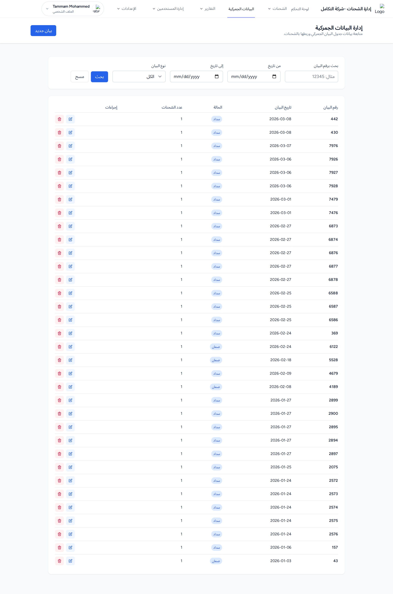
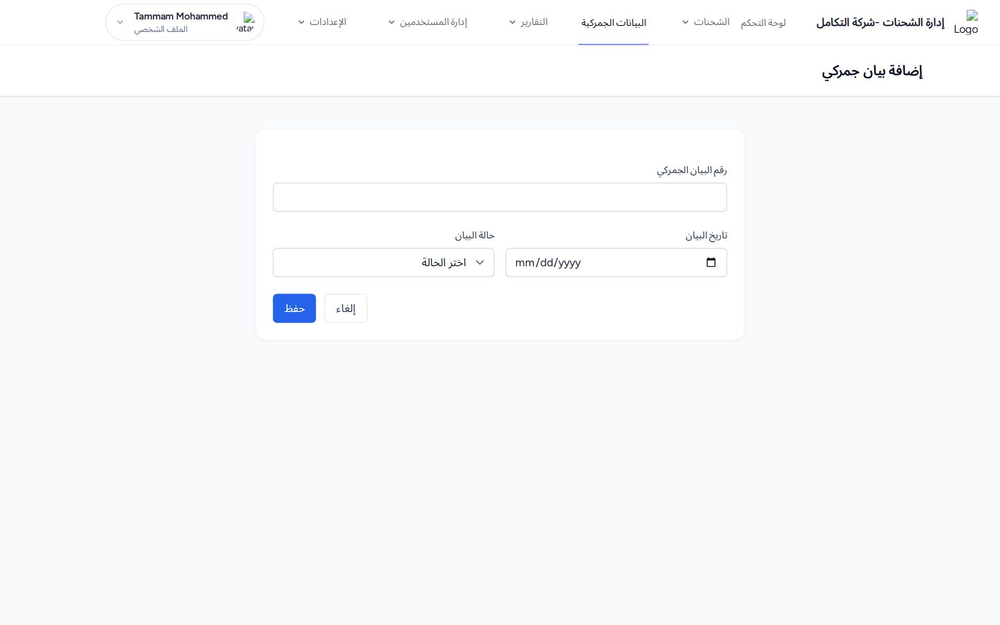

1. القائمة والبحث
فلاتر: بحث برقم البيان، من تاريخ، إلى تاريخ، ونوع البيان (الكل / ضمان / سداد). أعمدة الجدول: رقم البيان، تاريخ البيان، الحالة، عدد الشحنات، إجراءات.

صفحة «إدارة البيانات الجمركية»: الفلاتر، عمود «عدد الشحنات»، وزر «بيان جديد».
المخرجات المتوقعة: يعرض الجدول البيانات المطابقة مع عدد الشحنات المرتبطة بكل بيان.
2. إضافة بيان جمركي
- اضغط بيان جديد.
- أدخل رقم البيان الجمركي * (يجب أن يكون فريداً).
- أدخل تاريخ البيان *.
- اختر حالة البيان (ضمان / سداد) — اختياري.
- اضغط حفظ.

نموذج «إضافة بيان جمركي»: حقل «رقم البيان الجمركي»، «تاريخ البيان»، قائمة «حالة البيان»، وزر «حفظ».
المخرجات المتوقعة: رسالة «تم إضافة البيان الجمركي بنجاح» والعودة إلى القائمة.